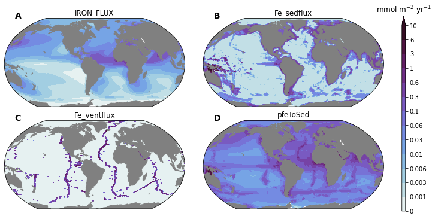

dFE Comparison Notebook¶
Setup¶
Imports¶
Notice this first line, we use the %load_ext and %autoreload to automatically update the packages used inline with the most recent modifications made
%load_ext autoreload
%autoreload 2
import os
from itertools import product
import numpy as np
import xarray as xr
import matplotlib.pyplot as plt
import matplotlib.gridspec as gridspec
import matplotlib.colors as colors
import cmocean
import cartopy
import cartopy.crs as ccrs
import xpersist as xp
cache_dir = '/glade/p/cgd/oce/projects/cesm2-marbl/xpersist_cache/3d_fields'
if (os.path.isdir(cache_dir)):
xp.settings['cache_dir'] = cache_dir
os.makedirs(cache_dir, exist_ok=True)
os.environ['CESMDATAROOT'] = '/glade/scratch/mclong/inputdata'
import pop_tools
import climo_utils as cu
import utils
import discrete_obs
import plot
Use intake-esm to search for variables, components, and experiments¶
import intake
catalog = intake.open_esm_datastore('data/campaign-cesm2-cmip6-timeseries.json')
df = catalog.search(experiment='historical', component='ocn', stream='pop.h').df
variables = df.variable.unique()
[v for v in variables if 'Fe' in v or 'iron' in v.lower() or 'sed' in v.lower()]
['Fe',
'Fe_RIV_FLUX',
'Fe_scavenge',
'Fe_scavenge_rate',
'Fefree',
'IRON_FLUX',
'Jint_100m_Fe',
'P_iron_FLUX_100m',
'P_iron_FLUX_IN',
'P_iron_PROD',
'P_iron_REMIN',
'SedDenitrif',
'bsiToSed',
'calcToSed',
'calcToSed_ALT_CO2',
'diatFe',
'diat_Fe_lim_Cweight_avg_100m',
'diat_Fe_lim_surf',
'diazFe',
'diaz_Fe_lim_Cweight_avg_100m',
'diaz_Fe_lim_surf',
'dustToSed',
'pfeToSed',
'photoFe_diat',
'photoFe_diaz',
'photoFe_sp',
'pocToSed',
'ponToSed',
'popToSed',
'spFe',
'sp_Fe_lim_Cweight_avg_100m',
'sp_Fe_lim_surf',
'tend_zint_100m_Fe']
Spin up dask cluster¶
cluster, client = utils.get_ClusterClient()
cluster.scale(12) #adapt(minimum_jobs=0, maximum_jobs=24)
client
Client
|
Cluster
|
Read in the pop-grid¶
ds_grid = pop_tools.get_grid('POP_gx1v7')
ds_grid
<xarray.Dataset>
Dimensions: (nlat: 384, nlon: 320, nreg: 13, z_t: 60, z_w: 60, z_w_bot: 60)
Coordinates:
* z_t (z_t) float64 500.0 1.5e+03 2.5e+03 ... 5.125e+05 5.375e+05
* z_w (z_w) float64 0.0 1e+03 2e+03 3e+03 ... 4.75e+05 5e+05 5.25e+05
* z_w_bot (z_w_bot) float64 1e+03 2e+03 3e+03 ... 5e+05 5.25e+05 5.5e+05
* nreg (nreg) int64 0 1 2 3 4 5 6 7 8 9 10 11 12
Dimensions without coordinates: nlat, nlon
Data variables:
TLAT (nlat, nlon) float64 -79.22 -79.22 -79.22 ... 72.2 72.19 72.19
TLONG (nlat, nlon) float64 320.6 321.7 322.8 ... 318.9 319.4 319.8
ULAT (nlat, nlon) float64 -78.95 -78.95 -78.95 ... 72.42 72.41 72.41
ULONG (nlat, nlon) float64 321.1 322.3 323.4 ... 319.2 319.6 320.0
DXT (nlat, nlon) float64 1.894e+06 1.893e+06 ... 1.473e+06
DYT (nlat, nlon) float64 5.94e+06 5.94e+06 ... 5.046e+06 5.046e+06
DXU (nlat, nlon) float64 2.397e+06 2.397e+06 ... 1.391e+06
DYU (nlat, nlon) float64 5.94e+06 5.94e+06 ... 5.493e+06 5.493e+06
TAREA (nlat, nlon) float64 1.125e+13 1.125e+13 ... 7.432e+12
UAREA (nlat, nlon) float64 1.423e+13 1.423e+13 ... 7.639e+12
KMT (nlat, nlon) int32 0 0 0 0 0 0 0 0 0 0 ... 0 0 0 0 0 0 0 0 0 0
REGION_MASK (nlat, nlon) int32 0 0 0 0 0 0 0 0 0 0 ... 0 0 0 0 0 0 0 0 0 0
dz (z_t) float64 1e+03 1e+03 1e+03 ... 2.499e+04 2.5e+04 2.5e+04
region_name (nreg) <U21 'Black Sea' 'Baltic Sea' ... 'Hudson Bay'
region_val (nreg) int64 -13 -12 -5 1 2 3 4 6 7 8 9 10 11
Attributes:
lateral_dims: [384, 320]
vertical_dims: 60
vert_grid_file: gx1v7_vert_grid
horiz_grid_fname: inputdata/ocn/pop/gx1v7/grid/horiz_grid_20010402.ieeer8
topography_fname: inputdata/ocn/pop/gx1v7/grid/topography_20161215.ieeei4
region_mask_fname: inputdata/ocn/pop/gx1v7/grid/region_mask_20151008.ieeei4
type: dipole
title: POP_gx1v7 gridxarray.Dataset
- nlat: 384
- nlon: 320
- nreg: 13
- z_t: 60
- z_w: 60
- z_w_bot: 60
- z_t(z_t)float64500.0 1.5e+03 ... 5.375e+05
- units :
- cm
- long_name :
- depth from surface to midpoint of layer
- positive :
- down
array([5.000000e+02, 1.500000e+03, 2.500000e+03, 3.500000e+03, 4.500000e+03, 5.500000e+03, 6.500000e+03, 7.500000e+03, 8.500000e+03, 9.500000e+03, 1.050000e+04, 1.150000e+04, 1.250000e+04, 1.350000e+04, 1.450000e+04, 1.550000e+04, 1.650984e+04, 1.754790e+04, 1.862913e+04, 1.976603e+04, 2.097114e+04, 2.225783e+04, 2.364088e+04, 2.513702e+04, 2.676542e+04, 2.854837e+04, 3.051192e+04, 3.268680e+04, 3.510935e+04, 3.782276e+04, 4.087847e+04, 4.433777e+04, 4.827367e+04, 5.277280e+04, 5.793729e+04, 6.388626e+04, 7.075633e+04, 7.870025e+04, 8.788252e+04, 9.847059e+04, 1.106204e+05, 1.244567e+05, 1.400497e+05, 1.573946e+05, 1.764003e+05, 1.968944e+05, 2.186457e+05, 2.413972e+05, 2.649001e+05, 2.889385e+05, 3.133405e+05, 3.379794e+05, 3.627670e+05, 3.876452e+05, 4.125768e+05, 4.375393e+05, 4.625190e+05, 4.875083e+05, 5.125028e+05, 5.375000e+05]) - z_w(z_w)float640.0 1e+03 2e+03 ... 5e+05 5.25e+05
- units :
- cm
- positive :
- down
- long_name :
- depth from surface to top of layer
array([ 0. , 1000. , 2000. , 3000. , 4000. , 5000. , 6000. , 7000. , 8000. , 9000. , 10000. , 11000. , 12000. , 13000. , 14000. , 15000. , 16000. , 17019.6808, 18076.1292, 19182.1243, 20349.9313, 21592.3446, 22923.3124, 24358.4534, 25915.5793, 27615.2589, 29481.4713, 31542.3736, 33831.2257, 36387.4728, 39258.0478, 42498.885 , 46176.6575, 50370.6883, 55174.9119, 60699.6663, 67072.8582, 74439.803 , 82960.6956, 92804.3538, 104136.8196, 117104.0188, 131809.3626, 148290.0716, 166499.2064, 186301.4408, 207487.3978, 229803.9076, 252990.4017, 276809.8509, 301067.0677, 325613.847 , 350344.8607, 375189.1888, 400101.1634, 425052.4544, 450026.0482, 475012.0091, 500004.6829, 525000.927 ]) - z_w_bot(z_w_bot)float641e+03 2e+03 ... 5.25e+05 5.5e+05
- units :
- cm
- positive :
- down
- long_name :
- depth from surface to bottom of layer
array([ 1000. , 2000. , 3000. , 4000. , 5000. , 6000. , 7000. , 8000. , 9000. , 10000. , 11000. , 12000. , 13000. , 14000. , 15000. , 16000. , 17019.6808, 18076.1292, 19182.1243, 20349.9313, 21592.3446, 22923.3124, 24358.4534, 25915.5793, 27615.2589, 29481.4713, 31542.3736, 33831.2257, 36387.4728, 39258.0478, 42498.885 , 46176.6575, 50370.6883, 55174.9119, 60699.6663, 67072.8582, 74439.803 , 82960.6956, 92804.3538, 104136.8196, 117104.0188, 131809.3626, 148290.0716, 166499.2064, 186301.4408, 207487.3978, 229803.9076, 252990.4017, 276809.8509, 301067.0677, 325613.847 , 350344.8607, 375189.1888, 400101.1634, 425052.4544, 450026.0482, 475012.0091, 500004.6829, 525000.927 , 549999.0364]) - nreg(nreg)int640 1 2 3 4 5 6 7 8 9 10 11 12
array([ 0, 1, 2, 3, 4, 5, 6, 7, 8, 9, 10, 11, 12])
- TLAT(nlat, nlon)float64-79.22 -79.22 ... 72.19 72.19
- units :
- degrees_north
- long_name :
- T-grid latitude
array([[-79.22052261, -79.22052261, -79.22052261, ..., -79.22052261, -79.22052261, -79.22052261], [-78.68630626, -78.68630626, -78.68630626, ..., -78.68630626, -78.68630626, -78.68630626], [-78.15208992, -78.15208992, -78.15208992, ..., -78.15208992, -78.15208992, -78.15208992], ..., [ 71.29031715, 71.29408252, 71.30160692, ..., 71.30160692, 71.29408252, 71.29031716], [ 71.73524335, 71.73881845, 71.74596231, ..., 71.74596231, 71.73881845, 71.73524335], [ 72.18597561, 72.18933231, 72.19603941, ..., 72.19603941, 72.18933231, 72.18597562]]) - TLONG(nlat, nlon)float64320.6 321.7 322.8 ... 319.4 319.8
- units :
- degrees_east
- long_name :
- T-grid longitude
array([[320.56250892, 321.68750895, 322.81250898, ..., 317.18750883, 318.31250886, 319.43750889], [320.56250892, 321.68750895, 322.81250898, ..., 317.18750883, 318.31250886, 319.43750889], [320.56250892, 321.68750895, 322.81250898, ..., 317.18750883, 318.31250886, 319.43750889], ..., [320.25133086, 320.75380113, 321.25577325, ..., 318.74424456, 319.24621668, 319.74869143], [320.23459477, 320.70358949, 321.17207442, ..., 318.82794339, 319.29642832, 319.76542721], [320.21650899, 320.6493303 , 321.08163473, ..., 318.91838308, 319.3506875 , 319.78351267]]) - ULAT(nlat, nlon)float64-78.95 -78.95 ... 72.41 72.41
- units :
- degrees_north
- long_name :
- U-grid latitude
array([[-78.95289509, -78.95289509, -78.95289509, ..., -78.95289509, -78.95289509, -78.95289509], [-78.41865507, -78.41865507, -78.41865507, ..., -78.41865507, -78.41865507, -78.41865507], [-77.88441506, -77.88441506, -77.88441506, ..., -77.88441506, -77.88441506, -77.88441506], ..., [ 71.51215224, 71.51766482, 71.52684191, ..., 71.51766482, 71.51215224, 71.51031365], [ 71.95983548, 71.96504258, 71.97371054, ..., 71.96504258, 71.95983548, 71.95809872], [ 72.4135549 , 72.41841155, 72.42649554, ..., 72.41841155, 72.4135549 , 72.41193498]]) - ULONG(nlat, nlon)float64321.1 322.3 323.4 ... 319.6 320.0
- units :
- degrees_east
- long_name :
- U-grid longitude
array([[321.12500894, 322.25000897, 323.375009 , ..., 317.75000884, 318.87500887, 320.0000089 ], [321.12500894, 322.25000897, 323.375009 , ..., 317.75000884, 318.87500887, 320.0000089 ], [321.12500894, 322.25000897, 323.375009 , ..., 317.75000884, 318.87500887, 320.0000089 ], ..., [320.48637802, 320.97240884, 321.4577638 , ..., 319.02760897, 319.51363979, 320.00001324], [320.45160767, 320.90286181, 321.35342745, ..., 319.097156 , 319.54841014, 320.00001293], [320.41397858, 320.82760085, 321.24052915, ..., 319.17241696, 319.58603923, 320.00001259]]) - DXT(nlat, nlon)float641.894e+06 1.893e+06 ... 1.473e+06
- units :
- cm
- long_name :
- x-spacing centered at T points
- coordinates :
- TLONG TLAT
array([[1893724.16734842, 1893489.06047211, 1893007.05572959, ..., 1893007.05572959, 1893489.06047211, 1893724.16734842], [2453808.06658755, 2453808.06658755, 2453808.06658755, ..., 2453808.06658755, 2453808.06658755, 2453808.06658755], [2568054.75706075, 2568054.75706075, 2568054.75706075, ..., 2568054.75706075, 2568054.75706075, 2568054.75706075], ..., [1792815.11513785, 1792270.53086782, 1791150.69791216, ..., 1791150.69791216, 1792270.53086782, 1792815.11513785], [1635014.87507127, 1634497.02506524, 1633433.44903024, ..., 1633433.44903024, 1634497.02506524, 1635014.87507127], [1472954.03210867, 1472467.18486634, 1471468.46623378, ..., 1471468.46623378, 1472467.18486634, 1472954.03210867]]) - DYT(nlat, nlon)float645.94e+06 5.94e+06 ... 5.046e+06
- units :
- cm
- long_name :
- y-spacing centered at T points
- coordinates :
- TLONG TLAT
array([[5939545.50164216, 5939545.50164216, 5939545.50164216, ..., 5939545.50164216, 5939545.50164216, 5939545.50164216], [5939545.50164216, 5939545.50164216, 5939545.50164216, ..., 5939545.50164216, 5939545.50164216, 5939545.50164216], [5939545.50164216, 5939545.50164216, 5939545.50164216, ..., 5939545.50164216, 5939545.50164216, 5939545.50164216], ..., [4916574.84890538, 4917288.98384521, 4918715.63970048, ..., 4918715.63970048, 4917288.98384521, 4916574.84890538], [4978532.2566533 , 4979215.61944315, 4980580.74758446, ..., 4980580.74758446, 4979215.61944315, 4978532.2566533 ], [5045798.85436364, 5046446.74588877, 5047740.96078377, ..., 5047740.96078377, 5046446.74588877, 5045798.85436364]]) - DXU(nlat, nlon)float642.397e+06 2.397e+06 ... 1.391e+06
- units :
- cm
- long_name :
- x-spacing centered at U points
- coordinates :
- ULONG ULAT
array([[2396630.14446974, 2396630.14446974, 2396630.14446974, ..., 2396630.14446974, 2396630.14446974, 2396630.14446974], [2510985.98870535, 2510985.98870535, 2510985.98870535, ..., 2510985.98870535, 2510985.98870535, 2510985.98870535], [2625123.52541615, 2625123.52541615, 2625123.52541615, ..., 2625123.52541615, 2625123.52541615, 2625123.52541615], ..., [1714673.76651229, 1713860.79472732, 1712495.20914674, ..., 1713860.79472732, 1714673.76651229, 1714939.8761523 ], [1554838.13362422, 1554069.67936816, 1552779.42960208, ..., 1554069.67936816, 1554838.13362422, 1555089.87399024], [1390583.0833508 , 1389865.97173196, 1388662.44323673, ..., 1389865.97173196, 1390583.0833508 , 1390818.1902271 ]]) - DYU(nlat, nlon)float645.94e+06 5.94e+06 ... 5.493e+06
- units :
- cm
- long_name :
- y-spacing centered at U points
- coordinates :
- ULONG ULAT
array([[5939545.50164216, 5939545.50164216, 5939545.50164216, ..., 5939545.50164216, 5939545.50164216, 5939545.50164216], [5939545.50164216, 5939545.50164216, 5939545.50164216, ..., 5939545.50164216, 5939545.50164216, 5939545.50164216], [5939545.50164216, 5939545.50164216, 5939545.50164216, ..., 5939545.50164216, 5939545.50164216, 5939545.50164216], ..., [4947728.34045104, 4948776.26283732, 4950520.12444762, ..., 4948776.26283732, 4947728.34045104, 4947378.76510764], [5012332.0613836 , 5013330.30394832, 5014991.40441991, ..., 5013330.30394832, 5012332.0613836 , 5011999.04963334], [5492753.21352024, 5493239.03401069, 5494047.42841524, ..., 5493239.03401069, 5492753.21352024, 5492591.14248556]]) - TAREA(nlat, nlon)float641.125e+13 1.125e+13 ... 7.432e+12
- units :
- cm^2
- long_name :
- area of T cells
- coordinates :
- TLONG TLAT
array([[1.12478609e+13, 1.12464644e+13, 1.12436015e+13, ..., 1.12436015e+13, 1.12464644e+13, 1.12478609e+13], [1.45745047e+13, 1.45745047e+13, 1.45745047e+13, ..., 1.45745047e+13, 1.45745047e+13, 1.45745047e+13], [1.52530781e+13, 1.52530781e+13, 1.52530781e+13, ..., 1.52530781e+13, 1.52530781e+13, 1.52530781e+13], ..., [8.81450970e+12, 8.81311214e+12, 8.81016095e+12, ..., 8.81016095e+12, 8.81311214e+12, 8.81450970e+12], [8.13997430e+12, 8.13851312e+12, 8.13544719e+12, ..., 8.13544719e+12, 8.13851312e+12, 8.13997430e+12], [7.43222977e+12, 7.43072723e+12, 7.42759165e+12, ..., 7.42759165e+12, 7.43072723e+12, 7.43222977e+12]]) - UAREA(nlat, nlon)float641.423e+13 1.423e+13 ... 7.639e+12
- units :
- cm^2
- long_name :
- area of U cells
- coordinates :
- ULONG ULAT
array([[1.42348938e+13, 1.42348938e+13, 1.42348938e+13, ..., 1.42348938e+13, 1.42348938e+13, 1.42348938e+13], [1.49141155e+13, 1.49141155e+13, 1.49141155e+13, ..., 1.49141155e+13, 1.49141155e+13, 1.49141155e+13], [1.55920406e+13, 1.55920406e+13, 1.55920406e+13, ..., 1.55920406e+13, 1.55920406e+13, 1.55920406e+13], ..., [8.48373999e+12, 8.48151362e+12, 8.47774200e+12, ..., 8.48151362e+12, 8.48373999e+12, 8.48445713e+12], [7.79336503e+12, 7.79106462e+12, 7.78717549e+12, ..., 7.79106462e+12, 7.79336503e+12, 7.79410897e+12], [7.63812970e+12, 7.63486601e+12, 7.62937733e+12, ..., 7.63486601e+12, 7.63812970e+12, 7.63919567e+12]]) - KMT(nlat, nlon)int320 0 0 0 0 0 0 0 ... 0 0 0 0 0 0 0 0
- long_name :
- k Index of Deepest Grid Cell on T Grid
- coordinates :
- TLONG TLAT
array([[ 0, 0, 0, ..., 0, 0, 0], [ 0, 0, 0, ..., 0, 0, 0], [38, 38, 38, ..., 0, 0, 0], ..., [ 0, 0, 0, ..., 0, 0, 0], [ 0, 0, 0, ..., 0, 0, 0], [ 0, 0, 0, ..., 0, 0, 0]], dtype=int32) - REGION_MASK(nlat, nlon)int320 0 0 0 0 0 0 0 ... 0 0 0 0 0 0 0 0
- long_name :
- basin index number (signed integers)
- coordinates :
- TLONG TLAT
array([[0, 0, 0, ..., 0, 0, 0], [0, 0, 0, ..., 0, 0, 0], [1, 1, 1, ..., 0, 0, 0], ..., [0, 0, 0, ..., 0, 0, 0], [0, 0, 0, ..., 0, 0, 0], [0, 0, 0, ..., 0, 0, 0]], dtype=int32) - dz(z_t)float641e+03 1e+03 ... 2.5e+04 2.5e+04
- units :
- cm
- long_name :
- thickness of layer k
array([ 1000. , 1000. , 1000. , 1000. , 1000. , 1000. , 1000. , 1000. , 1000. , 1000. , 1000. , 1000. , 1000. , 1000. , 1000. , 1000. , 1019.6808, 1056.4484, 1105.9951, 1167.807 , 1242.4133, 1330.9678, 1435.141 , 1557.1259, 1699.6796, 1866.2124, 2060.9023, 2288.8521, 2556.2471, 2870.575 , 3240.8372, 3677.7725, 4194.0308, 4804.2236, 5524.7544, 6373.1919, 7366.9448, 8520.8926, 9843.6582, 11332.4658, 12967.1992, 14705.3438, 16480.709 , 18209.1348, 19802.2344, 21185.957 , 22316.5098, 23186.4941, 23819.4492, 24257.2168, 24546.7793, 24731.0137, 24844.3281, 24911.9746, 24951.291 , 24973.5938, 24985.9609, 24992.6738, 24996.2441, 24998.1094]) - region_name(nreg)<U21'Black Sea' ... 'Hudson Bay'
array(['Black Sea', 'Baltic Sea', 'Red Sea', 'Southern Ocean', 'Pacific Ocean', 'Indian Ocean', 'Persian Gulf', 'Atlantic Ocean', 'Mediterranean Sea', 'Lab. Sea & Baffin Bay', 'GIN Seas', 'Arctic Ocean', 'Hudson Bay'], dtype='<U21') - region_val(nreg)int64-13 -12 -5 1 2 3 4 6 7 8 9 10 11
- coordinate :
- region_name
array([-13, -12, -5, 1, 2, 3, 4, 6, 7, 8, 9, 10, 11])
- lateral_dims :
- [384, 320]
- vertical_dims :
- 60
- vert_grid_file :
- gx1v7_vert_grid
- horiz_grid_fname :
- inputdata/ocn/pop/gx1v7/grid/horiz_grid_20010402.ieeer8
- topography_fname :
- inputdata/ocn/pop/gx1v7/grid/topography_20161215.ieeei4
- region_mask_fname :
- inputdata/ocn/pop/gx1v7/grid/region_mask_20151008.ieeei4
- type :
- dipole
- title :
- POP_gx1v7 grid
Operate on dataset using xpersist to cache output¶
nmolcm3_to_nM = 1e3
nmolcm2s_to_mmolm2yr = 1e-9 * 1e3 * 1e4 * 86400 * 365.
µmolm2d_to_mmolm2yr = 1e-3 * 365.
time_slice = slice("1990-01-15", "2015-01-15")
varlist = [
'Fe',
'IRON_FLUX',
'Fe_RIV_FLUX',
'pfeToSed',
]
ds_list = []
for variable in varlist:
xp_func = xp.persist_ds(cu.read_CESM_var, name=f'{variable}', trust_cache=True)
ds_list.append(xp_func(
time_slice,
variable,
mean_dims=['member_id', 'time'],
))
ds = xr.merge(ds_list)
with xr.set_options(keep_attrs=True):
for v in ['Fe']:
assert ds[v].attrs['units'] == 'mmol/m^3'
ds[v] = ds[v] * nmolcm3_to_nM
ds[v].attrs['units'] = 'nM'
for v in ['Fe_RIV_FLUX', 'pfeToSed']:
assert ds[v].attrs['units'] in ['nmol/cm^2/s', 'mmol/m^3 cm/s'], ds[v].attrs['units']
ds[v] = ds[v] * nmolcm2s_to_mmolm2yr
ds[v].attrs['units'] = 'mmol m$^{-2}$ yr$^{-1}$'
for v in ['IRON_FLUX']:
assert ds[v].attrs['units'] in ['mmol/m^2/s'], ds[v].attrs['units']
ds[v] = ds[v] * 86400. * 365. #* 1e4
ds[v].attrs['units'] = 'mmol m$^{-2}$ yr$^{-1}$'
file_fesedflux = '/glade/p/cesmdata/cseg/inputdata/ocn/pop/gx1v6/forcing/fesedfluxTot_gx1v6_cesm2_2018_c180618.nc'
file_feventflux = '/glade/p/cesmdata/cseg/inputdata/ocn/pop/gx1v6/forcing/feventflux_gx1v6_5gmol_cesm1_97_2017.nc'
dsi = xr.merge((
xr.open_dataset(file_feventflux).rename({'FESEDFLUXIN': 'Fe_ventflux'}) * µmolm2d_to_mmolm2yr,
xr.open_dataset(file_fesedflux).rename({'FESEDFLUXIN': 'Fe_sedflux'}) * µmolm2d_to_mmolm2yr,
)).rename({'z': 'z_t', 'y': 'nlat', 'x': 'nlon'})
dsi.Fe_ventflux.attrs['units'] = 'mmol m$^{-2}$ yr$^{-1}$'
dsi.Fe_sedflux.attrs['units'] = 'mmol m$^{-2}$ yr$^{-1}$'
ds = xr.merge((ds, dsi,))
ds['dz'] = ds_grid.dz.drop('z_t') # drop z_t because precision issues cause diffs
dsp = utils.pop_add_cyclic(ds)
for v in dsp.data_vars:
if 'z_t' in dsp[v].dims:
dsp[v] = dsp[v].sum('z_t')
dsp.info()
assuming cache is correct
reading cached file: /glade/p/cgd/oce/projects/cesm2-marbl/xpersist_cache/3d_fields/Fe.nc
assuming cache is correct
reading cached file: /glade/p/cgd/oce/projects/cesm2-marbl/xpersist_cache/3d_fields/IRON_FLUX.nc
assuming cache is correct
reading cached file: /glade/p/cgd/oce/projects/cesm2-marbl/xpersist_cache/3d_fields/Fe_RIV_FLUX.nc
assuming cache is correct
reading cached file: /glade/p/cgd/oce/projects/cesm2-marbl/xpersist_cache/3d_fields/pfeToSed.nc
xarray.Dataset {
dimensions:
nlat = 384 ;
nlon = 321 ;
z_t = 60 ;
variables:
float64 z_t(z_t) ;
float64 TLAT(nlat, nlon) ;
float64 TLONG(nlat, nlon) ;
float32 Fe(nlat, nlon) ;
float32 IRON_FLUX(nlat, nlon) ;
IRON_FLUX:long_name = Atmospheric Iron Flux ;
IRON_FLUX:units = mmol m$^{-2}$ yr$^{-1}$ ;
IRON_FLUX:grid_loc = 2110 ;
IRON_FLUX:cell_methods = time: mean ;
float32 Fe_RIV_FLUX(nlat, nlon) ;
Fe_RIV_FLUX:long_name = Dissolved Inorganic Iron Riverine Flux ;
Fe_RIV_FLUX:units = mmol m$^{-2}$ yr$^{-1}$ ;
Fe_RIV_FLUX:grid_loc = 2110 ;
Fe_RIV_FLUX:cell_methods = time: mean ;
float32 pfeToSed(nlat, nlon) ;
pfeToSed:long_name = pFe Flux to Sediments ;
pfeToSed:units = mmol m$^{-2}$ yr$^{-1}$ ;
pfeToSed:grid_loc = 2110 ;
pfeToSed:cell_methods = time: mean ;
float32 Fe_ventflux(nlat, nlon) ;
float32 Fe_sedflux(nlat, nlon) ;
float64 dz() ;
// global attributes:
}
Spin down your cluster¶
client.close()
cluster.close()
del client
del cluster
ds
<xarray.Dataset>
Dimensions: (nlat: 384, nlon: 320, z_t: 60)
Coordinates:
* z_t (z_t) float64 500.0 1.5e+03 2.5e+03 ... 5.125e+05 5.375e+05
TLONG (nlat, nlon) float64 320.6 321.7 322.8 ... 318.9 319.4 319.8
TLAT (nlat, nlon) float64 -79.22 -79.22 -79.22 ... 72.2 72.19 72.19
ULONG (nlat, nlon) float64 321.1 322.3 323.4 ... 319.2 319.6 320.0
ULAT (nlat, nlon) float64 -78.95 -78.95 -78.95 ... 72.42 72.41 72.41
Dimensions without coordinates: nlat, nlon
Data variables:
Fe (z_t, nlat, nlon) float32 nan nan nan nan ... nan nan nan nan
IRON_FLUX (nlat, nlon) float32 nan nan nan nan nan ... nan nan nan nan
Fe_RIV_FLUX (nlat, nlon) float32 nan nan nan nan nan ... nan nan nan nan
pfeToSed (nlat, nlon) float32 nan nan nan nan nan ... nan nan nan nan
Fe_ventflux (z_t, nlat, nlon) float32 0.0 0.0 0.0 0.0 ... 0.0 0.0 0.0 0.0
Fe_sedflux (z_t, nlat, nlon) float32 0.0 0.0 0.0 0.0 ... 0.0 0.0 0.0 0.0
dz (z_t) float64 1e+03 1e+03 1e+03 ... 2.499e+04 2.5e+04 2.5e+04xarray.Dataset
- nlat: 384
- nlon: 320
- z_t: 60
- z_t(z_t)float64500.0 1.5e+03 ... 5.375e+05
array([5.000000e+02, 1.500000e+03, 2.500000e+03, 3.500000e+03, 4.500000e+03, 5.500000e+03, 6.500000e+03, 7.500000e+03, 8.500000e+03, 9.500000e+03, 1.050000e+04, 1.150000e+04, 1.250000e+04, 1.350000e+04, 1.450000e+04, 1.550000e+04, 1.650984e+04, 1.754790e+04, 1.862913e+04, 1.976603e+04, 2.097114e+04, 2.225783e+04, 2.364088e+04, 2.513702e+04, 2.676542e+04, 2.854837e+04, 3.051192e+04, 3.268680e+04, 3.510935e+04, 3.782276e+04, 4.087846e+04, 4.433777e+04, 4.827367e+04, 5.277280e+04, 5.793729e+04, 6.388626e+04, 7.075633e+04, 7.870025e+04, 8.788252e+04, 9.847059e+04, 1.106204e+05, 1.244567e+05, 1.400497e+05, 1.573946e+05, 1.764003e+05, 1.968944e+05, 2.186457e+05, 2.413972e+05, 2.649001e+05, 2.889385e+05, 3.133405e+05, 3.379793e+05, 3.627670e+05, 3.876452e+05, 4.125768e+05, 4.375392e+05, 4.625190e+05, 4.875083e+05, 5.125028e+05, 5.375000e+05]) - TLONG(nlat, nlon)float64320.6 321.7 322.8 ... 319.4 319.8
- long_name :
- array of t-grid longitudes
- units :
- degrees_east
array([[320.56250892, 321.68750895, 322.81250898, ..., 317.18750883, 318.31250886, 319.43750889], [320.56250892, 321.68750895, 322.81250898, ..., 317.18750883, 318.31250886, 319.43750889], [320.56250892, 321.68750895, 322.81250898, ..., 317.18750883, 318.31250886, 319.43750889], ..., [320.25133086, 320.75380113, 321.25577325, ..., 318.74424456, 319.24621668, 319.74869143], [320.23459477, 320.70358949, 321.17207442, ..., 318.82794339, 319.29642832, 319.76542721], [320.21650899, 320.6493303 , 321.08163473, ..., 318.91838308, 319.3506875 , 319.78351267]]) - TLAT(nlat, nlon)float64-79.22 -79.22 ... 72.19 72.19
- long_name :
- array of t-grid latitudes
- units :
- degrees_north
array([[-79.22052261, -79.22052261, -79.22052261, ..., -79.22052261, -79.22052261, -79.22052261], [-78.68630626, -78.68630626, -78.68630626, ..., -78.68630626, -78.68630626, -78.68630626], [-78.15208992, -78.15208992, -78.15208992, ..., -78.15208992, -78.15208992, -78.15208992], ..., [ 71.29031715, 71.29408252, 71.30160692, ..., 71.30160692, 71.29408252, 71.29031716], [ 71.73524335, 71.73881845, 71.74596231, ..., 71.74596231, 71.73881845, 71.73524335], [ 72.18597561, 72.18933231, 72.19603941, ..., 72.19603941, 72.18933231, 72.18597562]]) - ULONG(nlat, nlon)float64321.1 322.3 323.4 ... 319.6 320.0
- long_name :
- array of u-grid longitudes
- units :
- degrees_east
array([[321.12500894, 322.25000897, 323.375009 , ..., 317.75000884, 318.87500887, 320.0000089 ], [321.12500894, 322.25000897, 323.375009 , ..., 317.75000884, 318.87500887, 320.0000089 ], [321.12500894, 322.25000897, 323.375009 , ..., 317.75000884, 318.87500887, 320.0000089 ], ..., [320.48637802, 320.97240884, 321.4577638 , ..., 319.02760897, 319.51363979, 320.00001324], [320.45160767, 320.90286181, 321.35342745, ..., 319.097156 , 319.54841014, 320.00001293], [320.41397858, 320.82760085, 321.24052915, ..., 319.17241696, 319.58603923, 320.00001259]]) - ULAT(nlat, nlon)float64-78.95 -78.95 ... 72.41 72.41
- long_name :
- array of u-grid latitudes
- units :
- degrees_north
array([[-78.95289509, -78.95289509, -78.95289509, ..., -78.95289509, -78.95289509, -78.95289509], [-78.41865507, -78.41865507, -78.41865507, ..., -78.41865507, -78.41865507, -78.41865507], [-77.88441506, -77.88441506, -77.88441506, ..., -77.88441506, -77.88441506, -77.88441506], ..., [ 71.51215224, 71.51766482, 71.52684191, ..., 71.51766482, 71.51215224, 71.51031365], [ 71.95983548, 71.96504258, 71.97371054, ..., 71.96504258, 71.95983548, 71.95809872], [ 72.4135549 , 72.41841155, 72.42649554, ..., 72.41841155, 72.4135549 , 72.41193498]])
- Fe(z_t, nlat, nlon)float32nan nan nan nan ... nan nan nan nan
- long_name :
- Dissolved Inorganic Iron
- units :
- nM
- grid_loc :
- 3111
- cell_methods :
- time: mean
array([[[ nan, nan, nan, ..., nan, nan, nan], [ nan, nan, nan, ..., nan, nan, nan], [0.24864908, 0.24838397, 0.24823627, ..., nan, nan, nan], ..., [ nan, nan, nan, ..., nan, nan, nan], [ nan, nan, nan, ..., nan, nan, nan], [ nan, nan, nan, ..., nan, nan, nan]], [[ nan, nan, nan, ..., nan, nan, nan], [ nan, nan, nan, ..., nan, nan, nan], [0.25072592, 0.25043505, 0.25031474, ..., nan, nan, nan], ... [ nan, nan, nan, ..., nan, nan, nan], [ nan, nan, nan, ..., nan, nan, nan], [ nan, nan, nan, ..., nan, nan, nan]], [[ nan, nan, nan, ..., nan, nan, nan], [ nan, nan, nan, ..., nan, nan, nan], [ nan, nan, nan, ..., nan, nan, nan], ..., [ nan, nan, nan, ..., nan, nan, nan], [ nan, nan, nan, ..., nan, nan, nan], [ nan, nan, nan, ..., nan, nan, nan]]], dtype=float32) - IRON_FLUX(nlat, nlon)float32nan nan nan nan ... nan nan nan nan
- long_name :
- Atmospheric Iron Flux
- units :
- mmol m$^{-2}$ yr$^{-1}$
- grid_loc :
- 2110
- cell_methods :
- time: mean
array([[ nan, nan, nan, ..., nan, nan, nan], [ nan, nan, nan, ..., nan, nan, nan], [4.4902029e-10, 4.1962483e-10, 4.1158360e-10, ..., nan, nan, nan], ..., [ nan, nan, nan, ..., nan, nan, nan], [ nan, nan, nan, ..., nan, nan, nan], [ nan, nan, nan, ..., nan, nan, nan]], dtype=float32) - Fe_RIV_FLUX(nlat, nlon)float32nan nan nan nan ... nan nan nan nan
- long_name :
- Dissolved Inorganic Iron Riverine Flux
- units :
- mmol m$^{-2}$ yr$^{-1}$
- grid_loc :
- 2110
- cell_methods :
- time: mean
array([[nan, nan, nan, ..., nan, nan, nan], [nan, nan, nan, ..., nan, nan, nan], [ 0., 0., 0., ..., nan, nan, nan], ..., [nan, nan, nan, ..., nan, nan, nan], [nan, nan, nan, ..., nan, nan, nan], [nan, nan, nan, ..., nan, nan, nan]], dtype=float32) - pfeToSed(nlat, nlon)float32nan nan nan nan ... nan nan nan nan
- long_name :
- pFe Flux to Sediments
- units :
- mmol m$^{-2}$ yr$^{-1}$
- grid_loc :
- 2110
- cell_methods :
- time: mean
array([[ nan, nan, nan, ..., nan, nan, nan], [ nan, nan, nan, ..., nan, nan, nan], [0.0005173 , 0.00052543, 0.00053939, ..., nan, nan, nan], ..., [ nan, nan, nan, ..., nan, nan, nan], [ nan, nan, nan, ..., nan, nan, nan], [ nan, nan, nan, ..., nan, nan, nan]], dtype=float32) - Fe_ventflux(z_t, nlat, nlon)float320.0 0.0 0.0 0.0 ... 0.0 0.0 0.0 0.0
- units :
- mmol m$^{-2}$ yr$^{-1}$
array([[[0., 0., 0., ..., 0., 0., 0.], [0., 0., 0., ..., 0., 0., 0.], [0., 0., 0., ..., 0., 0., 0.], ..., [0., 0., 0., ..., 0., 0., 0.], [0., 0., 0., ..., 0., 0., 0.], [0., 0., 0., ..., 0., 0., 0.]], [[0., 0., 0., ..., 0., 0., 0.], [0., 0., 0., ..., 0., 0., 0.], [0., 0., 0., ..., 0., 0., 0.], ..., [0., 0., 0., ..., 0., 0., 0.], [0., 0., 0., ..., 0., 0., 0.], [0., 0., 0., ..., 0., 0., 0.]], [[0., 0., 0., ..., 0., 0., 0.], [0., 0., 0., ..., 0., 0., 0.], [0., 0., 0., ..., 0., 0., 0.], ..., ... ..., [0., 0., 0., ..., 0., 0., 0.], [0., 0., 0., ..., 0., 0., 0.], [0., 0., 0., ..., 0., 0., 0.]], [[0., 0., 0., ..., 0., 0., 0.], [0., 0., 0., ..., 0., 0., 0.], [0., 0., 0., ..., 0., 0., 0.], ..., [0., 0., 0., ..., 0., 0., 0.], [0., 0., 0., ..., 0., 0., 0.], [0., 0., 0., ..., 0., 0., 0.]], [[0., 0., 0., ..., 0., 0., 0.], [0., 0., 0., ..., 0., 0., 0.], [0., 0., 0., ..., 0., 0., 0.], ..., [0., 0., 0., ..., 0., 0., 0.], [0., 0., 0., ..., 0., 0., 0.], [0., 0., 0., ..., 0., 0., 0.]]], dtype=float32) - Fe_sedflux(z_t, nlat, nlon)float320.0 0.0 0.0 0.0 ... 0.0 0.0 0.0 0.0
- units :
- mmol m$^{-2}$ yr$^{-1}$
array([[[0.000000e+00, 0.000000e+00, 0.000000e+00, ..., 0.000000e+00, 0.000000e+00, 0.000000e+00], [0.000000e+00, 0.000000e+00, 0.000000e+00, ..., 0.000000e+00, 0.000000e+00, 0.000000e+00], [1.247308e-05, 1.247308e-05, 1.247308e-05, ..., 0.000000e+00, 0.000000e+00, 0.000000e+00], ..., [0.000000e+00, 0.000000e+00, 0.000000e+00, ..., 0.000000e+00, 0.000000e+00, 0.000000e+00], [0.000000e+00, 0.000000e+00, 0.000000e+00, ..., 0.000000e+00, 0.000000e+00, 0.000000e+00], [0.000000e+00, 0.000000e+00, 0.000000e+00, ..., 0.000000e+00, 0.000000e+00, 0.000000e+00]], [[0.000000e+00, 0.000000e+00, 0.000000e+00, ..., 0.000000e+00, 0.000000e+00, 0.000000e+00], [0.000000e+00, 0.000000e+00, 0.000000e+00, ..., 0.000000e+00, 0.000000e+00, 0.000000e+00], [1.247308e-05, 1.247308e-05, 1.247308e-05, ..., 0.000000e+00, 0.000000e+00, 0.000000e+00], ... [0.000000e+00, 0.000000e+00, 0.000000e+00, ..., 0.000000e+00, 0.000000e+00, 0.000000e+00], [0.000000e+00, 0.000000e+00, 0.000000e+00, ..., 0.000000e+00, 0.000000e+00, 0.000000e+00], [0.000000e+00, 0.000000e+00, 0.000000e+00, ..., 0.000000e+00, 0.000000e+00, 0.000000e+00]], [[0.000000e+00, 0.000000e+00, 0.000000e+00, ..., 0.000000e+00, 0.000000e+00, 0.000000e+00], [0.000000e+00, 0.000000e+00, 0.000000e+00, ..., 0.000000e+00, 0.000000e+00, 0.000000e+00], [0.000000e+00, 0.000000e+00, 0.000000e+00, ..., 0.000000e+00, 0.000000e+00, 0.000000e+00], ..., [0.000000e+00, 0.000000e+00, 0.000000e+00, ..., 0.000000e+00, 0.000000e+00, 0.000000e+00], [0.000000e+00, 0.000000e+00, 0.000000e+00, ..., 0.000000e+00, 0.000000e+00, 0.000000e+00], [0.000000e+00, 0.000000e+00, 0.000000e+00, ..., 0.000000e+00, 0.000000e+00, 0.000000e+00]]], dtype=float32) - dz(z_t)float641e+03 1e+03 ... 2.5e+04 2.5e+04
- units :
- cm
- long_name :
- thickness of layer k
array([ 1000. , 1000. , 1000. , 1000. , 1000. , 1000. , 1000. , 1000. , 1000. , 1000. , 1000. , 1000. , 1000. , 1000. , 1000. , 1000. , 1019.6808, 1056.4484, 1105.9951, 1167.807 , 1242.4133, 1330.9678, 1435.141 , 1557.1259, 1699.6796, 1866.2124, 2060.9023, 2288.8521, 2556.2471, 2870.575 , 3240.8372, 3677.7725, 4194.0308, 4804.2236, 5524.7544, 6373.1919, 7366.9448, 8520.8926, 9843.6582, 11332.4658, 12967.1992, 14705.3438, 16480.709 , 18209.1348, 19802.2344, 21185.957 , 22316.5098, 23186.4941, 23819.4492, 24257.2168, 24546.7793, 24731.0137, 24844.3281, 24911.9746, 24951.291 , 24973.5938, 24985.9609, 24992.6738, 24996.2441, 24998.1094])
Use the discrete_obs tool to subset ofr a single lat/lon/depth, return a dataframe and its associated region mask¶
df = discrete_obs.open_datastream('dFe')
df.obs_stream.add_model_field(ds.Fe)
df.obs_stream.add_model_field(ds_grid.REGION_MASK, method='nearest')
df
| month | lon | lat | depth | dFe_obs | Fe | REGION_MASK | |
|---|---|---|---|---|---|---|---|
| 0 | 1 | 210.010 | -16.0018 | 20.0 | 0.540000 | 0.065604 | 2.0 |
| 1 | 1 | 210.010 | -16.0018 | 35.0 | 0.440000 | 0.065562 | 2.0 |
| 2 | 1 | 210.010 | -16.0019 | 50.0 | 0.480000 | 0.066896 | 2.0 |
| 3 | 1 | 210.010 | -16.0019 | 80.0 | 0.400000 | 0.081158 | 2.0 |
| 4 | 1 | 210.010 | -16.0020 | 100.0 | 0.390000 | 0.096782 | 2.0 |
| ... | ... | ... | ... | ... | ... | ... | ... |
| 27777 | 732519 | 160.051 | 47.0032 | 3929.6 | 0.825681 | 0.850402 | 2.0 |
| 27778 | 732519 | 160.051 | 47.0032 | 3929.8 | 0.902248 | 0.850392 | 2.0 |
| 27779 | 732519 | 160.051 | 47.0032 | 4900.4 | 0.555630 | NaN | 2.0 |
| 27780 | 732519 | 160.051 | 47.0032 | 4900.9 | 0.621851 | NaN | 2.0 |
| 27781 | 732519 | 160.051 | 47.0032 | 5210.1 | 0.573220 | NaN | 2.0 |
27782 rows × 7 columns
Look at the RIV_FLUX calculation¶
ds.Fe_RIV_FLUX.plot()
<matplotlib.collections.QuadMesh at 0x2b440a1df990>
dsp.IRON_FLUX.plot()
<matplotlib.collections.QuadMesh at 0x2b4531d39350>
¶
fields = ['IRON_FLUX', 'Fe_sedflux', 'Fe_ventflux', 'pfeToSed']
log_levels = [0., 0.001]
for scale in 10**np.arange(-3., 1., 1.):
log_levels.extend(list(np.array([3., 6., 10.]) * scale))
levels = {k: log_levels for k in fields}
fig = plt.figure(figsize=(12, 6))
prj = ccrs.Robinson(central_longitude=305.0)
nrow, ncol = 2, 2
gs = gridspec.GridSpec(
nrows=nrow, ncols=ncol+1,
width_ratios=(1, 1, 0.02),
wspace=0.15,
hspace=0.1,
)
axs = np.empty((nrow, ncol)).astype(object)
caxs= np.empty((nrow, ncol)).astype(object)
for i, j in product(range(nrow), range(ncol)):
axs[i, j] = plt.subplot(gs[i, j], projection=prj)
cax = plt.subplot(gs[:, -1])
cmap_field = cmocean.cm.dense
for n, field in enumerate(fields):
i, j = np.unravel_index(n, axs.shape)
ax = axs[i, j]
cf = ax.contourf(
dsp.TLONG,dsp.TLAT, dsp[field],
levels=levels[field],
extend='max',
cmap=cmap_field,
norm=colors.BoundaryNorm(levels[field], ncolors=cmap_field.N),
transform=ccrs.PlateCarree(),
)
land = ax.add_feature(
cartopy.feature.NaturalEarthFeature(
'physical','land','110m',
edgecolor='face',
facecolor='gray'
)
)
ax.set_title(field) #dsp[field].attrs['title_str'])
cb = plt.colorbar(cf, cax=cax, ticks=log_levels)
if 'units' in dsp[field].attrs:
cb.ax.set_title(dsp[field].attrs['units'])
cb.ax.set_yticklabels([f'{f:g}' for f in log_levels])
utils.label_plots(fig, [ax for ax in axs.ravel()], xoff=0.02, yoff=0)
utils.savefig('iron-budget-maps.pdf')

plt.plot(df.dFe_obs, df.Fe, '.')
plt.xlabel('CESM2 dFe [nM]')
plt.ylabel('Obs dFe [nM]')
plt.plot([0, 5], [0, 5], 'r-')
[<matplotlib.lines.Line2D at 0x2b81bb1a89d0>]
df = discrete_obs.obs_datastream(ds.Fe, 'dFe')
df
| month | lon | lat | depth | dFe_obs | Fe | |
|---|---|---|---|---|---|---|
| 0 | 1 | 210.010 | -16.0018 | 20.0 | 0.540000 | 0.065604 |
| 1 | 1 | 210.010 | -16.0018 | 35.0 | 0.440000 | 0.065562 |
| 2 | 1 | 210.010 | -16.0019 | 50.0 | 0.480000 | 0.066896 |
| 3 | 1 | 210.010 | -16.0019 | 80.0 | 0.400000 | 0.081158 |
| 4 | 1 | 210.010 | -16.0020 | 100.0 | 0.390000 | 0.096782 |
| ... | ... | ... | ... | ... | ... | ... |
| 27777 | 732519 | 160.051 | 47.0032 | 3929.6 | 0.825681 | 0.850402 |
| 27778 | 732519 | 160.051 | 47.0032 | 3929.8 | 0.902248 | 0.850392 |
| 27779 | 732519 | 160.051 | 47.0032 | 4900.4 | 0.555630 | NaN |
| 27780 | 732519 | 160.051 | 47.0032 | 4900.9 | 0.621851 | NaN |
| 27781 | 732519 | 160.051 | 47.0032 | 5210.1 | 0.573220 | NaN |
27782 rows × 6 columns